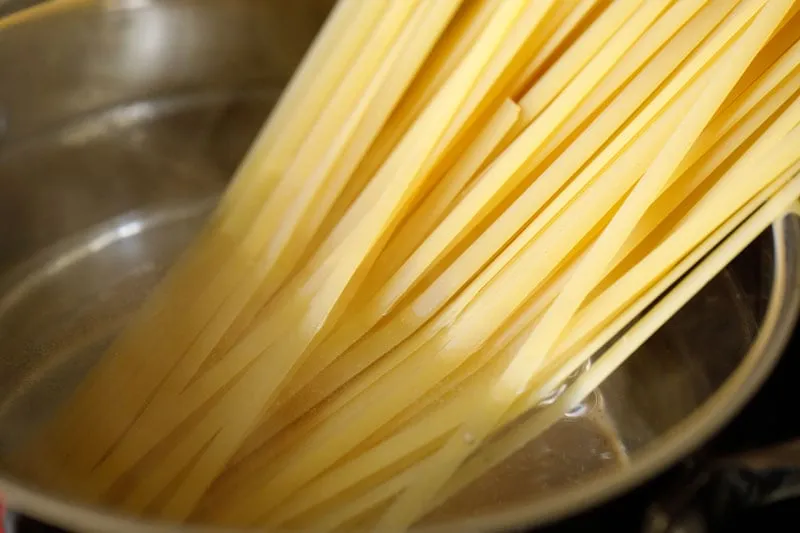

Tomato basil pasta
Origin: Italian
Source: https://www.bonappetit.com/recipe/pasta-with-no-cook-tomato-sauce
Category: Main Dish

This recipe is a fantastic way to step up your pasta game without taking too much more of your time. It tastes way better than basic pasta with jarred sauce! I originally found this when my sister made it, and got the recipe off of Bon Appetit’s website. PS avoid using the shaker parmesan – I used that the first time I made this and it drew down the quality of the dish.
Recipe Ingredients:
- pasta
- tomatoes (any larger than cherry)
- basil
- red wine vinegar
- extra virgin olive oil
- crushed red pepper
- finely grated block of parmesan
Recipe Steps:
- cut tomatoes along equator
- squeeze juice and seeds out of tomatoes and discard
- cut juiced tomatoes into small-ish pieces
- smush down with large spoon to release some leftover juices
- add in vinegar, olive oil, crushed red pepper and half of parmesan
- let marinate for half an hour
- add basil
- cook pasta
- toss marinade with cooked pasta and serve topped with remaining parmesan
Additional Food images:



Pork and Peanut Dragon Noodles
Origin: Unknown
Source: https://www.budgetbytes.com/pork-peanut-dragon-noodles/
Category: Main Dish, Comfort Food, Quick Meal

This meal is a cheap and easy alternative to the classic cheap college meal: ramen noodles. It cooks up in about 10
minutes, and offers a ton of flavor and a more filling alternative to the typical packaged food. There is also plenty of
room for culinary freedom and expression by adding extra sauces or spices, and substituting the pork for something like
chicken for a healthier protein option.
Recipe Ingredients:
- 1/4 cup chili garlic sauce
- 1/4 cup soy sauce
- 1/4 cup brown sugar
- 1/2 lb. ground pork
- 2 3oz. packages ramen noodles (seasoning packets discarded)
- 3 green onions, sliced
- 1/4 cup unsalted peanuts, chopped
Recipe Steps:
- Combine the chili garlic sauce, soy sauce, and brown sugar in a bowl.
- Add the ground pork to a skillet and cook over medium heat until it is fully browned.
- Once browned, add the prepared dragon sauce and chopped peanuts.
- Allow the pork and peanuts to simmer in the sauce for another 5 minutes, or until the sauce has reduced by half.
- While the pork is browning, begin boiling water for your noodles.
- Once boiling, add your noodles and cook according tothe package directions.
- Drain the noodles in a colander.
- Once the sauce has reduced and the noodles have drained, add the noodles to the skillet and toss until everything is combined and coated in sauce.
- Top with sliced green onions and serve!
Additional Food images: